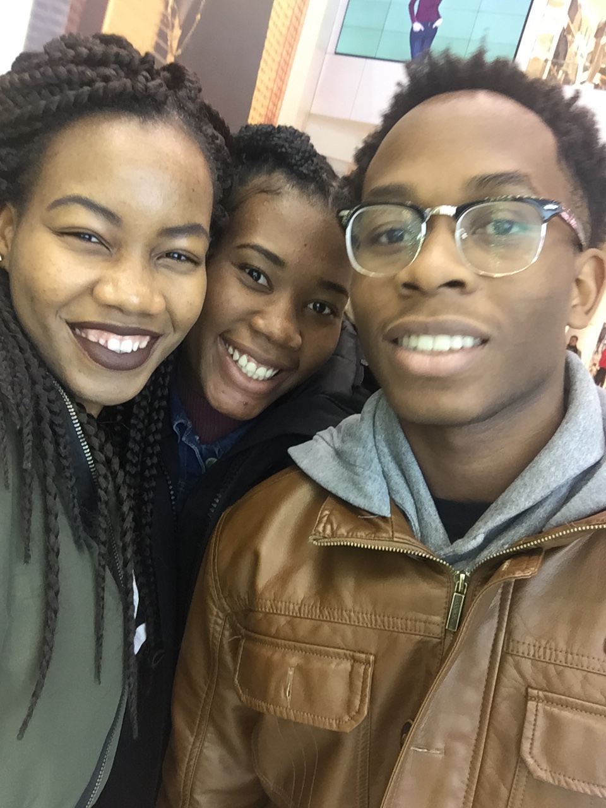
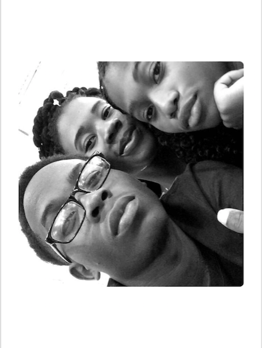
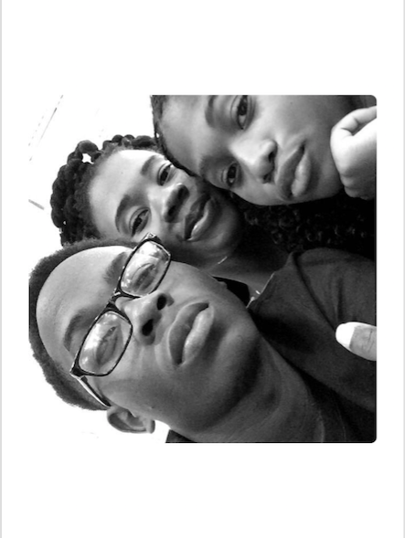
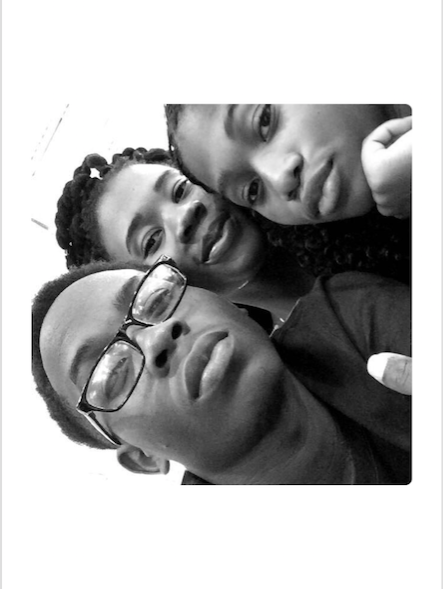

My name is Genevieve Okon. I am 21 years old. I've completed my third year of Software engineering and co-op in McMaster University. I completed my elementary education in Houston, Texas, USA and my secondary education in Nigeria. I've been living in Ontario, Canada since 2012. My aim is to get employment opportunities in order to gain experience in the software engineering department. I work well with others and enjoy new experiences. My hobbies are watching tv shows, basketball and programming.

 


...Back Story...
I was born and raised in Nigeria.
I am the eldest child in a family of four kids.
My Dad is an electrical engineer and my Mom is a civil servant.
My Family inspires me everyday.
These are a few of my favourite things...
Things that I enjoy;
Drawing. Coding. TV Shows. Music. Dancing.
Things i'm passionate about;
sELF ImProvement
ArTs and Culture
HuMan Rights
EduCation
Science & TECHnology
The best way to predict the future
is to create it
-Peter Drucker
I aspire to be a good software engineer,
writer and artist.
is to create it
-Peter Drucker
I aspire to be a good software engineer,
writer and artist.